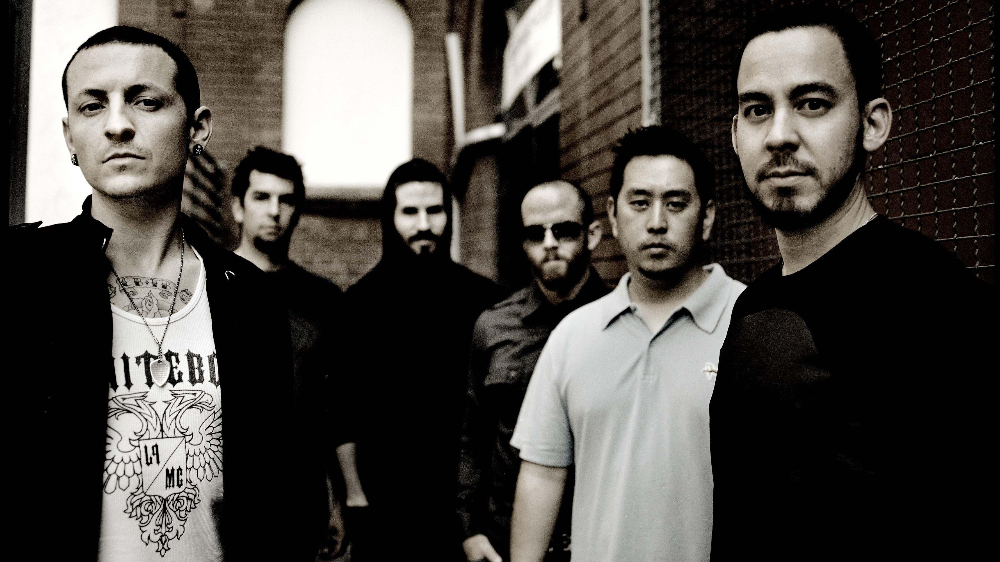

Información
Linkin Park es una banda estadounidense de rock procedente de Los Angeles, California, Estados Unidos. Formada en 1996, el grupo estuvo inicialmente integrado por Mike Shinoda, Dave Farrell, Joe Hahn, Brad Delson, Rob Bourdon y Mark Wakefield, este último como voz principal. ... Farrell regresó un año más tarde.
Los primeros años de la banda se remontan a un pequeño estudio del vocalista Mike Shinoda donde se reunían él, un amigo y compañero de colegio Agoura High School, Brad Delson, en la que grabaron un primer material a modo garage en 1995. Los dos estaban en el mismo instituto, donde conocieron a Rob Bourdon, (actual baterista de la banda). Más adelante, cuando tomaron el tema de la banda de forma «seria», Shinoda contactó con Joe Hahn que estudiaba en el Art Center College de Pasadena.36 La agrupación se formó inicialmente en Los Ángeles y comenzó en 1996 con una mezcla de géneros musicales como nu metal, hardcore y hip hop.
Después de haberse graduado de la secundaria, los jóvenes californianos Mike Shinoda, Rob Bourdon y Brad Delson tomaron mayor participación en el grupo, y poco después, se unió Joe Hahn y Dave Farrell (apodado «Phoenix») de manera comprometida ese mismo año. El grupo se formó con cinco integrantes y para completar la formación, invitaron a participar a Mark Wakefield como vocalista principal, y aunque con limitaciones financieramente, grabaron su primer material en ese mismo año en un estudio improvisado propiedad de Mike Shinoda bajo el nombre «Xero». Sin embargo, no lograron obtener un contrato, por lo que el proyecto no prosperó, sucesivamente Wakefield, al sentirse frustrado, decidió abandonar la formación para proseguir con sus estudios.
Debido a que Wakefield declinó el proyecto, Shinoda se vio en la necesidad de contratar un nuevo vocalista, de entre los solicitantes destacó Chester Bennington, un joven originario de Phoenix, Arizona, el cual formó parte del grupo Grey Daze hasta 1998, y en la que adquirió su experiencia con la grabaciones de discos desde los 16 años. Shinoda le hizo llegar algunas canciones interpretadas por el vocalista anterior y versiones instrumentales, para que él grabara su voz sobre las últimas. Una vez finalizado el trabajo, Bennington contactó a Shinoda vía telefónica para mostrarle su propia grabación, los integrantes estuvieron sorprendidos por su voz, por lo que decidieron convocarlo a una reunión inmediatamente.